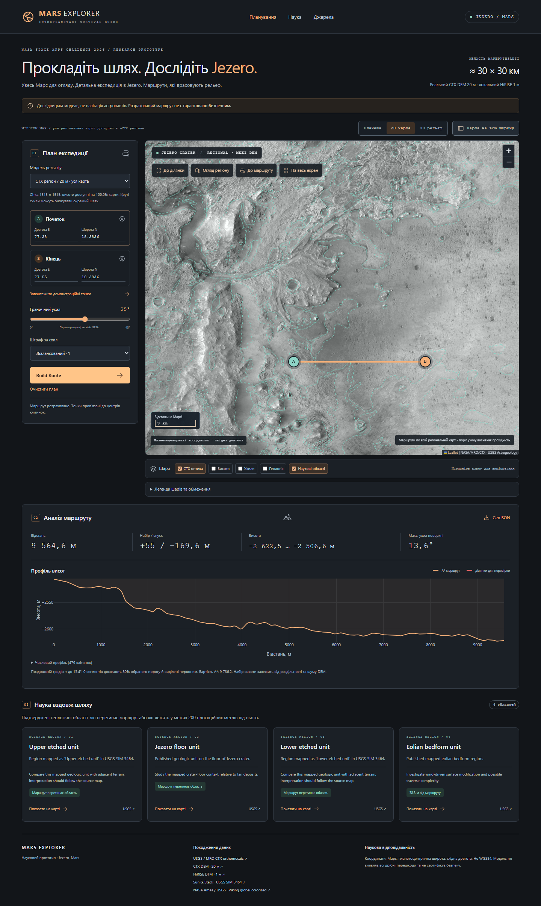

Від орбітальних спостережень — до зрозумілого модельного маршруту.
Interplanetary Survival Guide: Martian Map
Науковий прототип. Не система гарантовано безпечної навігації.
Оптика показує поверхню. DEM описує рельєф. Геологія пояснює дослідницький інтерес. Ми поєднали їх на спільній карті Jezero.
Реальне CTX-ортофото й перемикання шарів без глобального завантаження Марса.
Висоти, ухили й задані користувачем параметри моделі.
Підтверджені геологічні області вздовж знайденого шляху.
| Джерело | Використання | Масштаб |
|---|---|---|
| USGS / MRO CTX | Орторектифікована оптика | 6 м/піксель |
| USGS CTX DEM | Регіональна сітка A* | 20 м · 1513 × 1515 |
| USGS HiRISE DTM | Окремий детальний фрагмент | 1 проєкційний метр |
| Sun & Stack, SIM 3464 | Геологія / 4 наукові області | Карта 1:75 000 |
Сфера радіуса 3 396 190 м, марсіанські CRS та фізичні відстані.
Відстань + штраф за схил. NoData та перевищення порогу блокують рух. Діагоналі не зрізають непрохідні кути.
Профіль висот, набір/спуск, ухили та області науки з першоджерелами.
Поріг ухилу задає користувач. Це параметр математичної моделі, а не офіційний стандарт безпеки NASA.
Карта → A / B → A*
→ профіль → наука
React · Leaflet · Plotly
FastAPI · NumPy · Python 3.14

GIS, A*, API, глобус Марса, регіональний DEM, 3D mesh та невідомі клітинки.
Реальний CTX/HiRISE, графік, експорт, помилки та mobile layout.
Публічний deploy, реальний demo URL та остаточне подання команди.
Не виявляємо всі дрібні перешкоди. Не сертифікуємо безпечне пересування.
Джерела: USGS SIM 3464 · USGS Astrogeology CTX/HiRISE.